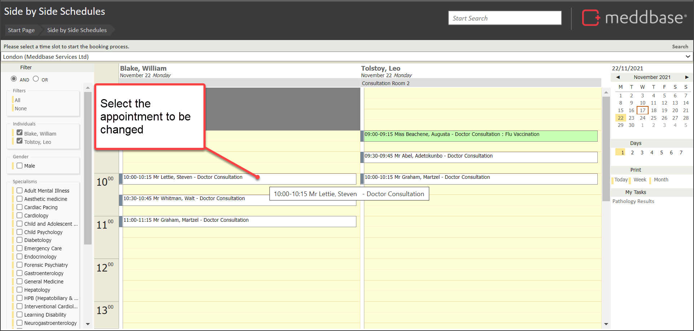
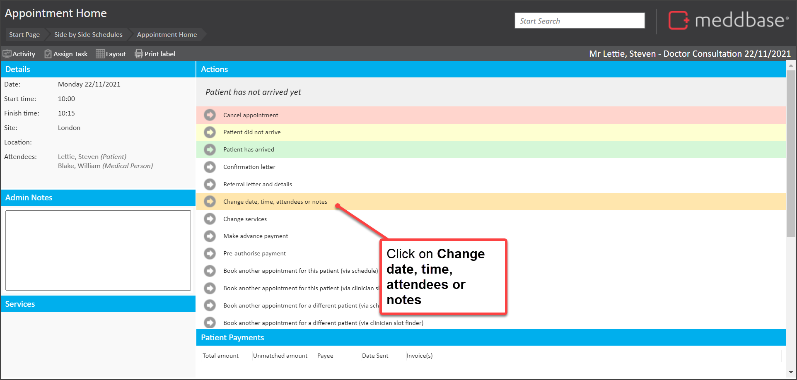
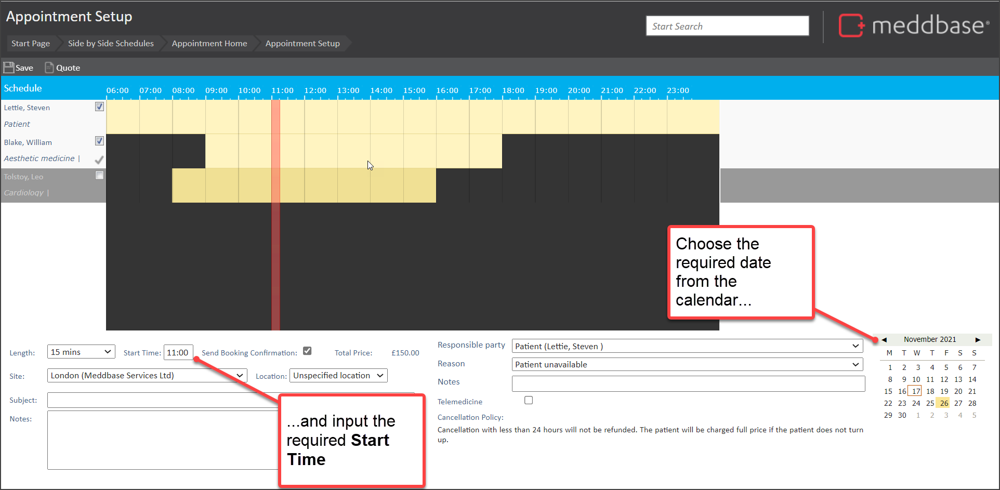
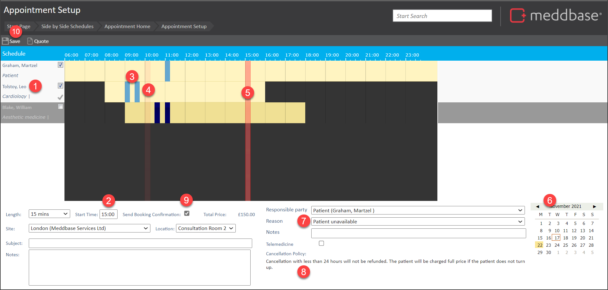

You may need to make changes to an upcoming appointment to the date, time or attendees.
This article outlines:
It's important to note that:
To record a change to the date and time of an appointment:
1. Navigate to the appointment
2. Select the appointment to be changed

3. In the Appointment Home page, click the option Change date, time, attendees or notes within the Actions pane

The Appointment setup page is displayed showing the current schedule and attendee(s) for the appointment.
To continue to change the date and time:
4. Select the required date via the calendar in the bottom right of the screen
5. Input the required Start Time

6. Make further changes as required
7. Click on Save in the top-left of the page
Unless you click on Save, the appointment changes will not be saved.
8. Where advised that new booking alerts will be sent, click on Yes
The process of making the change to the appointment is complete.
There are a few effects that are noted below:
There is a range of features and options available when making a change to an appointment. These are identified in the annotated screenshot below and explained in the table underneath.

| No. | Explanation |
| 1. | This lists the patient and attendees with ticks next to their names. It also shows further clinical users that can be selected as attendees; as well as the specialism. Clinicians that are ticked to be attendees are shown with a bright horizontal yellow bar representing their schedule. Clinicians that are not ticked as attendees are shown with dull yellow bar representing their schedule. |
| 2. | Shows the Start Time for the appointment. This can be manually input in the format hh:mm. If you manually drag the red vertical bar (5) to the required slot, the Start Time automatically updates. |
| 3. | The bright blue bars represent slots that are already booked for attending clinicians. |
| 4. | The faded red vertical bar shows where an appointment was booked prior to changing the Start Time. |
| 5. | The bright red vertical bar shows the current slot for the appointment. This bar can be manually dragged to adjust the Start Time. |
| 6. | The calendar which can be used to navigate through months to select a different date for a rescheduled appointment. |
| 7. | A Reason drop-down list for which a selection is made to explain why a change is being made. These are based on Appointment Amendment Reasons which are set via Admin > Common Catalogues. |
| 8. | Any charges set up in Billing rules which may lead to additional charges that the payer may incur for the change to the appointment. |
| 9. | When ticked, Send Booking Confirmation will send a confirmation message to the patient in respect of the change to the appointment. |
| 10. | The Save button which needs to be selected to commit any changes for the appointment. |
As well as marking that a patient 'Did Not Arrive', you may be interested in the following articles